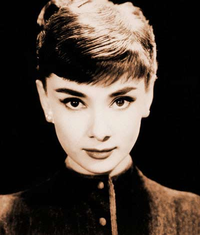

奥黛丽·赫本

奥黛丽·赫本（Audrey Hepburn），1929年5月4日出生于比利时布鲁塞尔，英国电影和舞台剧女演员。
1948年，赫本在一部时长仅39分钟的荷兰风光纪录片《荷兰七课》中出镜，开始电影生涯。1954年，她在影片《罗马假日》中第一次出演女主角，并获得奥斯卡最佳女主角奖。同年，她因在舞台剧《美人鱼》中的表演，获得托尼奖的最佳女主角。1955年，她凭借电影《龙凤配》再度获得奥斯卡最佳女主角奖的提名。1961年，她主演了电影《蒂凡尼的早餐》。1964年，她主演了歌舞片《窈窕淑女》。1989年，息影多年的奥黛丽客串出演最后一部电影《直到永远》。
晚年时，奥黛丽·赫本投身慈善事业，是联合国儿童基金会亲善大使的代表人物，为第三世界妇女与孩童争取权益。1992年被授予美国“总统自由勋章”，1993年获奥斯卡人道主义奖[1] 。1993年1月20日，奥黛丽·赫本因阑尾癌病逝，享年63岁。
赫本一生中共获得五次奥斯卡最佳女主角提名。1999年，她被美国电影学会评为“百年来最伟大的女演员”第三位。2002年5月，联合国儿童基金会在其纽约总部为一尊7英尺高的青铜雕像揭幕，雕像名字为奥黛丽精神（The Spirit of Audrey），以表彰赫本为联合国所做的贡献。
代表作品
- 罗马假日
- 窈窕淑女
- 蒂凡尼的早餐
- 龙凤配
个人信息
- 血统
- 赫本的父亲名为约瑟夫·维克特·安瑟尼·赫本-鲁斯顿，是英格兰银行布鲁塞尔分行总经理，母亲名为艾拉·凡·赫姆斯特拉，是男爵夫人、荷兰王室直系贵族血统后裔。
- 后代
- 赫本的长子名为西恩·赫本·费勒，为赫本与梅尔所生，出生于1960年7月17日，从事电影行业，涉足后期、制片、推广等。建管奥黛丽赫本儿童基金会，著有赫本传记《天使在人间》。西恩与第二任妻子乔凡娜及两个儿子住在美国加州的圣莫尼卡和意大利的托斯卡纳
次子卢卡·多蒂，为赫本与多蒂所生，出生于1970年2月8日，与哥哥共同管理奥黛丽赫本儿童基金会。
- 宠物
- 1956年梅尔送给了赫本一条约克夏犬，赫本为它取名“出名”。“出名”跟随赫本出入聚会片场，受尽宠爱，曾多次出现在摄影师为赫本拍摄的照片中，并出境《甜姐儿》中安娜卡列琳娜在火车站的镜头。 “出名”于1960年因卡车车祸死于《恩怨情天》好莱坞片场，这让赫本备受打击。
第二条约克夏犬“山姆”，外形酷似“出名”，为其死后梅尔所送。
五只杰克罗素犬Missy、Tuppy、Penny、Piceri、Jackie为赫本晚年所养，送给罗伯特当作是他50岁的生日礼物。它们甚至睡在赫本的床上。
奥斯卡金像奖获奖记录
- 1993 第65届 吉恩.赫肖尔特人道主义奖 （获奖）
- 1968 第40届 最佳女主角 盲女惊魂记 （提名）
- 1962 第34届 最佳女主角 蒂凡尼的早餐 （提名）
- 1960 第32届 最佳女主角 修女传 （提名）
- 1955 第27届 最佳女主角 龙凤配 （提名）
- 1954 第26届 最佳女主角 罗马假日 （获奖)